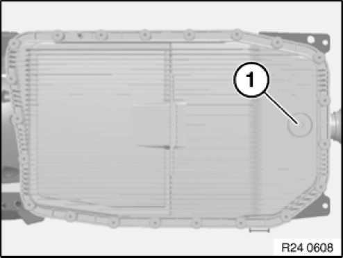
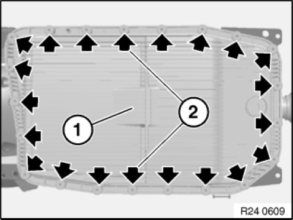
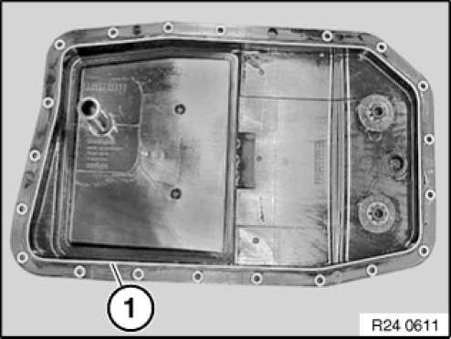
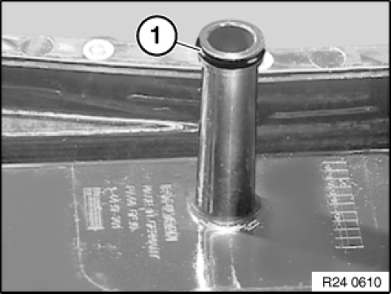
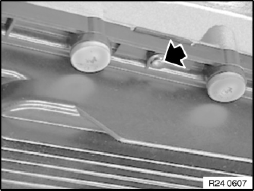
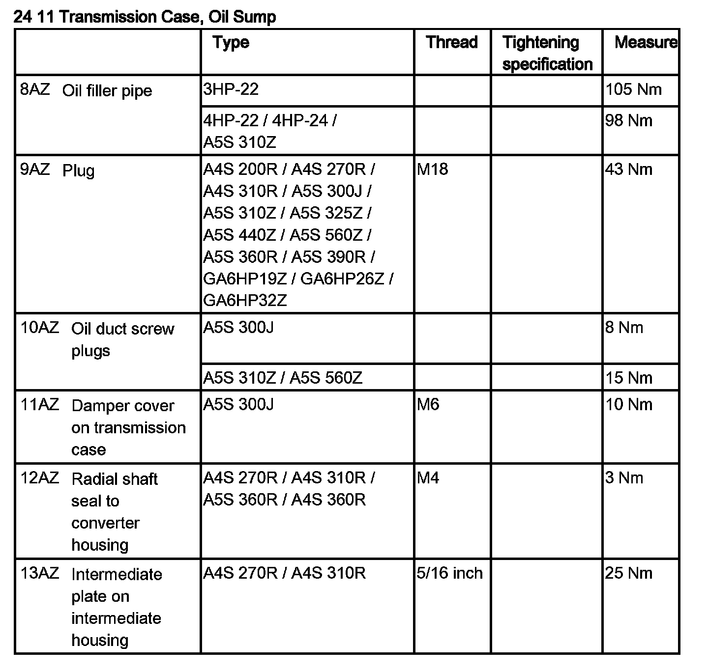

24 11 011 Removing and Installing/Sealing or Replacing Transmission Sump (GA6HP19Z)
24 11 011 Removing And Installing/Sealing Or Replacing Transmission Oil Sump (GA6HP19Z)

IMPORTANT:
- Do not let skin come in contact with transmission oil and do not inhale fuel vapors.
- Wear protective gloves.
- Ensure adequate ventilation.

IMPORTANT:
Remove transmission oil sump only after it has cooled down.
After completion of repair work, check transmission oil level.
Use only the approved gearbox oil.
Failure to comply with this requirement will result in serious damage to the automatic transmission.

Recycling:
Catch and dispose of escaping automatic transmission fluid.
Observe country-specific waste disposal regulations.

Necessary preliminary tasks:
Remove rear underbody protection.
Remove exhaust bracket from transmission.

Remove oil drain plug (1).
Tightening torque: 24 11 6AZ.
Drain automatic transmission oil.
Installation note:
Replace oil drain plug.

Unscrew all bolts.
Remove transmission oil sump (1).
IMPORTANT:
Transmission with plastic oil sump
From 11/04, new M6x28.5 T40 Torx screw can be retrospectively replaced.
Installation note:
Insert screws (2) until screw heads make contact.
Insert all further screws in diagonal sequence from inside to outside until screw heads make contact.
Tightening torque: 24 11 5AZ.

Remove gasket (1) from transmission sump.
Clean sealing faces and groove with a cloth.
Insert new gasket in transmission oil sump groove.
IMPORTANT: Do not degrease transmission oil sump with cleaning agent.

Replace sealing ring (1) on oil filter tube.

Installation note:
The gasket is correctly installed when it is engaged in the locating opening of the transmission oil sump.


